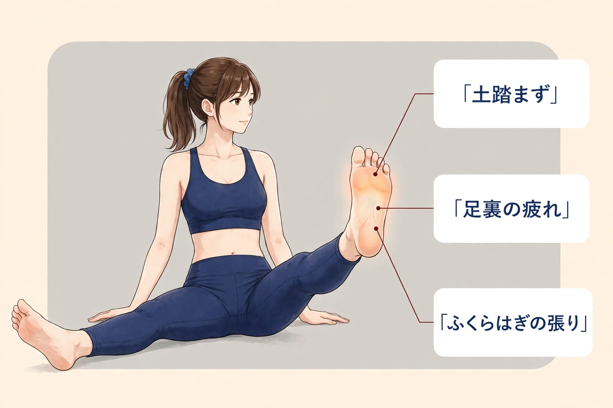

足裏の疲れ
美容整体ステラ・ポラリス東三国｜大阪市淀川区東三国・東三国駅徒歩5分・女性向け

歩くたびに感じる足裏のだるさを、軽やかな一歩へ
夕方になると足の裏がだるい、歩くたびに土踏まずが疲れる——足裏の疲れは、立ち仕事や歩く時間の長い方、ヒールを履くことの多い方に多いお悩みです。足裏には、歩くときの衝撃を受け止める土踏まずのアーチがあり、そのアーチを支える筋肉や膜が疲れてくると、足裏全体にだるさや重さを感じやすくなると言われています。ふくらはぎの硬さや靴の選び方も重なりやすいポイントです。このページでは、足裏の疲れの背景にある仕組みと、足取りが軽く感じられる状態を目指す当サロンでのケア、ご自宅でできるセルフケアをご案内します。足裏は、体重を支える土台であり、歩く・立つといった毎日の動作の出発点です。ここに疲れが溜まると、脚全体の重さや姿勢の崩れにもつながりやすいと言われています。夕方の足の重さが気になる方は、まず足裏の状態から見直してみてください。
ご予約はこちら（Coubic）こんなお悩みありませんか
- 夕方になると、足の裏全体がだるく重く感じる
- 長い時間立った日は、土踏まずが疲れて痛だるい
- ヒールを履いた日は、足の前側に体重がかかりっぱなしに感じる
- 足の指を動かすと、ゴリゴリと固い感触がある
- 歩きはじめの一歩が重く、足が前に出にくい
- ふくらはぎまで張って、脚全体が重く感じる
- 足裏を押すと気持ちいいけれど、自分ではほぐしきれない
当てはまる項目が多いほど、土踏まずのアーチを支える部分に負担が積み重なっている目安とされています。足裏の疲れは、足裏そのものだけでなく、ふくらはぎや歩き方のクセともつながっています。次のセルフチェックで、ご自身のアーチと足指の状態の傾向を確かめてみましょう。
簡単セルフチェック（土踏まずのアーチチェック）
お風呂あがりなどに、足の状態を確かめる簡単な方法です。
- 足の裏を少し濡らして紙の上に立ち、足跡を見ます。土踏まずの部分がくびれて残っていれば、アーチが保たれている目安です。
- 足の指をグー・パーのように動かしてみます。指が開きにくい、動きが小さい場合は、足裏の筋肉が固まっている目安と言われています。
- 立ったまま、土踏まずを指で押してみます。深く沈む感じや強い痛みがなく、軽い弾力があればよい状態の目安です。
※これは診断ではありません。ご自身の状態の傾向を知る目安としてお使いください。
足裏の疲れの原因と仕組み
土踏まずのアーチと足裏の仕組み
足の裏には、かかとから指の付け根へ縦に伸びるアーチと、横方向のアーチがあり、歩くたびにバネのように働いて衝撃を受け止めています。このアーチを支えているのが、足の裏の筋肉や、土踏まずを包む膜の組織です。図1のように、アーチがしっかり働いているときは体重が足裏全体に分散されますが、支える力が疲れてくると一点に負担が集まり、だるさや痛だるさを感じやすくなります。アーチには縦と横の両方があり、着地の衝撃を吸収しながら、蹴り出しのバネとしても働く、精密な仕組みになっています。

図1 土踏まずのアーチの働きと、負担が集まりやすい場所のイメージ。歩き方や靴、立ち時間の長さによって、負担のかかり方には個人差があります。
ふくらはぎとのつながり
足裏の状態は、ふくらはぎの硬さとも深く関わっています。ふくらはぎは足首を動かす筋肉の集まりで、固まると足首の動きが小さくなり、着地のたびに足裏へかかる衝撃を逃がしにくくなると言われています。足裏だけをほぐしても戻りやすいと感じる方は、ふくらはぎを含めた脚全体の巡りと柔らかさを見直すことが大切です。ふくらはぎがポンプのように働くことで、足先の巡りも助けられています。このポンプの働きが弱まると、足裏の疲れも抜けにくくなります。
靴と歩き方のクセ
底の薄い靴やヒールの高い靴は、足の前側に体重が集まりやすく、土踏まずのアーチにも負担がかかります。また、足指を使わずにペタペタと歩くクセがあると、足裏の筋肉が働く機会が減り、アーチを支える力が弱まりやすいと言われています。毎日の靴と歩き方が、足裏の疲れの積み重ねに影響します。靴底のすり減り方に偏りがある方は、歩き方のクセが表れている目安です。お持ちの靴の裏を一度確かめてみるのもおすすめです。日々の積み重ねが、疲れやすさを左右します。
女性に多い背景
女性はヒールやパンプスなど、足先の細い靴を選ぶ場面が多く、足裏への負担が偏りやすい環境にあります。冷えやすい方は足先の巡りが滞りやすく、疲れが抜けにくいと感じることもあります。立ち仕事や育児で抱っこが続く生活も、足裏への負担を増やす一因になります。体重を支える時間が長い生活では、こまめに足指を動かしたり、座って足を休ませたりする小さな習慣が、負担の積み重ねを減らす助けになります。小さな積み重ねが、足裏の軽さを保つ土台になります。
セルフケアで足りる場合・サロンケアが向く場合
足裏のだるさが軽く、足指を動かしたり温めたりすると楽に感じる日が多い場合は、まずご自宅でのセルフケアを続けて様子を見る方法があります。一方で、土踏まずの痛だるさが続く、ふくらはぎまで張って脚全体が重い、足裏を自分でほぐしてもすぐに戻るという場合は、サロンでのケアが向いている目安になります。サロンでは、足裏からふくらはぎ、脚全体のラインまでを合わせて整え、施術後に「足が軽い」「歩きやすい」と感じやすい状態を目指します。今の状態に合わせて選ぶことが大切です。迷われる場合は、LINEやご予約の際に、今の状態をお気軽にご相談ください。状態に合わせて、進め方をご案内します。
当サロンでのケア
当サロンの足裏の疲れケアは、「足裏がほぐれて、歩くのが軽く感じる状態」を目指す組み立てです。まず土踏まずの状態とふくらはぎの張り具合を一緒に確認し、部位と目的に合わせて3つの手技を組み合わせます。その日の歩き方や靴の習慣も合わせてうかがい、無理のない進め方を組み立てます。
美容整体：脚全体のラインと重心ののり方を整え、足裏に負担が集まりにくい立ち方・歩き方の土台をつくることを目的に。骨盤から足先までのバランスを見ながら進めます。
アロマオイルマッサージ：足裏からふくらはぎをオイルでゆるめ、巡りが流れやすい状態を目指します。足先まで温かく感じるような、リラックス感の高いケアです。
もみほぐし：土踏まずや指の付け根など、固くなりやすい足裏のポイントを丁寧にほぐし、だるさが抜けていく感覚を目指して進めます。
ケアを通して目指すのは、こんな変化です。
- 土踏まずまわりがほぐれて、足裏が軽く感じる状態へ
- ふくらはぎまでゆるんで、脚全体の重さがやわらぐ感覚へ
- 足指が動かしやすくなり、地面をつかむ感覚が戻るきっかけへ
- 歩きはじめの一歩が軽く感じられる状態へ
- 重心ののり方が整い、立ち姿勢が安定する感覚へ
施術の仕上げには、ご自宅でできる足裏ほぐしのコツや、靴選びのポイントもお伝えします。足裏が軽い感覚を知ることが、毎日の歩き方を見直すきっかけになります。足裏は感じやすい部位ですので、強さは遠慮なくお声がけください。施術後の軽さを日常に保つため、無理のない範囲で続けられる内容だけをお伝えします。

施術の流れ
ご来店後、気になる部位やお悩み、ご希望の強さなどをうかがいます。完全個室のため、周りを気にせずお話しいただけます。
土踏まずのアーチの状態や足指の動き、ふくらはぎの張り具合などを一緒に確認し、その日の状態に合わせた施術の進め方をご案内します。
美容整体を中心に、ご希望に応じてアロマオイルマッサージ、もみほぐしを組み合わせて進めます。強さは途中でも調整できます。
施術後の状態を確認し、ご自宅で続けやすいセルフケアのポイントをお伝えします。次回の目安についても、ご希望があればご案内します。
料金
| コース | 通常価格 | キャンペーン価格（12/25まで） |
|---|---|---|
| 80分 | 8,000円 | 3,000円 |
| 100分 | 10,000円 | 4,000円 |
| 120分 | 12,000円 | 5,000円 |
クリスマスキャンペーンは12月25日まで、ご新規様もリピーターの方も対象です。施術内容は当日の状態とご希望に合わせて組み立てます。
ご自宅でできるセルフケア
- ボール転がし：テニスボールやゴルフボールを足裏で転がし、土踏まずを中心に1〜2分ほぐします。体重のかけ具合で強さを調整してください。
- 足指グーチョキパー：足の指を握る・開く動きを10回ずつ繰り返します。アーチを支える筋肉を目覚めさせる習慣になります。朝の身支度の前など、タイミングを決めると続けやすくなります。
- 足首回し：座って足首を大きく回し、左右各10回。ふくらはぎと足裏の巡りを助けるつもりで、ゆっくり行ってください。入浴後の温まった状態で行うと、よりほぐれやすくなります。
- タオルつかみ：床に置いたタオルを足指でたぐり寄せる動きを左右5回。足裏の筋肉を使う感覚を取り戻す練習になります。テレビを見ながらでも続けやすい内容です。
ご自宅でのケアに：セルフケア資料ライブラリ（無料）
このお悩みに合わせたセルフケアの考え方を、無料の資料ライブラリでご紹介しています。
セルフケア資料ライブラリを開く →
受診の目安
足裏の痛みが強く歩くのがつらい場合や、腫れ・熱感・色の変化がある場合、しびれを伴う場合は、施術の前に医療機関への受診をおすすめします。かかとの痛みが朝の一歩目に強く続く場合も、まずは医療機関でご相談ください。
よくある質問
Q. 初めてでも大丈夫ですか？
はい。当サロンは完全予約制・完全個室で、1日3組までのご案内です。最初にカウンセリングで足裏の状態や立ち仕事・靴の習慣などをうかがい、無理のない内容から始めます。施術の前後で「足が軽くなった」「歩きやすい」といった感覚の違いを一緒に確認しながら進めますので、初めての方も安心してご利用いただけます。
Q. 足裏の施術は痛いですか？
足裏は感じやすい部位のため、強さはご希望をうかがいながら細かく調整します。固いポイントを無理に押すのではなく、ゆるんでいく感覚を味わえる圧を基本に進めます。感じ方には個人差がありますので、施術中も遠慮なくお声がけください。くすぐったさが苦手な方も、圧の加減で調整できますのでご安心ください。
Q. コースはどう選べばいいですか？
80分・100分・120分のコースがあり、ケアしたい部位の広さやお時間のご都合に合わせて選べます。足裏からふくらはぎ、脚全体までゆっくり整えたい方には、100分が選ばれることが多いコースです。迷われる場合は、ご予約の際にご相談ください。お気軽にご相談ください。
Q. 場所と予約方法を教えてください。
大阪市淀川区東三国、東三国駅から徒歩5分です。完全予約制のため、予約サイト（Coubic）またはLINE公式アカウントからご予約をお願いしています。
Q. 男性も受けられますか？
当サロンは女性向けのため、男性の方は、同じ東三国の男性専用整体院「北辰堂」をご案内しています。
施術者について
平賀建人（施術歴30年）
鍼灸師・登録販売者・アロマセラピスト・パーソナルトレーナーの資格を持ち、美容整体を中心に、アロマオイルマッサージ、もみほぐしを、その日の状態とご希望に合わせて組み合わせて施術します。このページの内容は、施術者の知識と経験をもとに作成しています。

料金・ご予約
ご新規様もリピーターの方も 12/25まで
80分 3,000円／100分 4,000円／120分 5,000円
通常価格は80分8,000円／100分10,000円／120分12,000円です。施術内容はご希望に合わせて組み立てます。
営業時間：月〜土 17:00〜23:00／日 10:00〜23:00（完全予約制）｜電話：080-2468-3086
大阪府大阪市淀川区東三国2丁目25番4号101（東三国駅徒歩5分）
専門解説で詳しく見る
仕組みから詳しく知りたい方は、専門解説シリーズのこちらの記事もあわせてご覧ください。